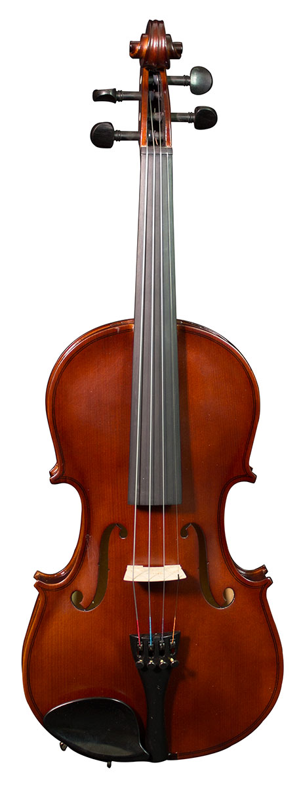
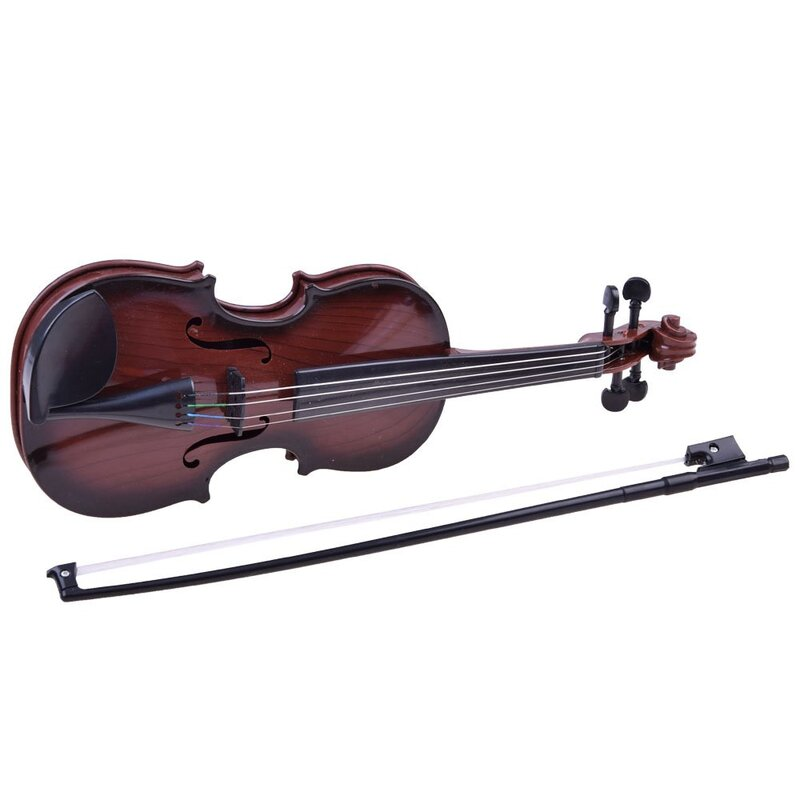
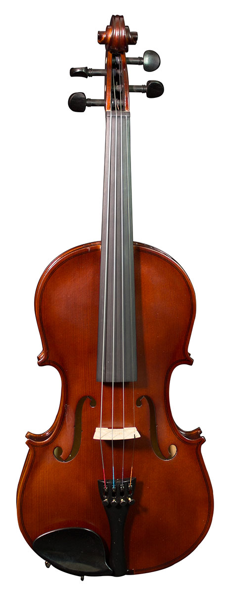
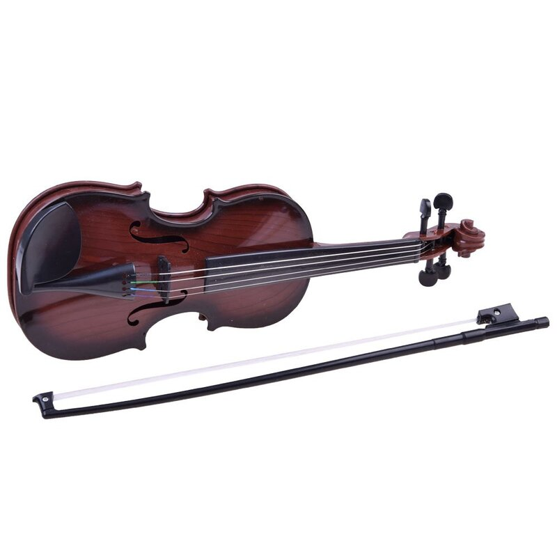

Smuikai
2020.10.30 03:35
0
0.00€
Jūsų prekių krepšelis tuščias Prekių katalogas
Gitaros
GITAROS Akustinės gitaros Klasikinės gitaros Elektrinės gitaros Bosinės gitaros Vaikiškos gitaros 12-stygės gitaros Gitaros kairiarankiams Ukulelės KITI STYGINIAI Ukulelės Bandžos Mandolinos Kiti styginiai STYGOS Akustinei gitarai Klasikinei gitarai Elektrinei gitarai Bosinei gitarai Ukulelei Bandžai Kitiems styginiams PRIEDAI Kubai Pedalai gitaroms Dėklai Derintuvai Diržai Garso nuėmėjai Kapodasteriai Laidai Mediatoriai Stovai Dalys Kiti
Klavišiniai
KLAVIŠINIAI Skaitmeniniai pianinai Sintezatoriai su akomp. MIDI klaviatūros Vargonai Vaikiški klavišiniai PRIEDAI Stovai Kėdutės Dėklai Pedalai Stovai natoms
Mušamieji
BŪGNŲ KOMPLEKTAI Akustiniai būgnai Elektroniniai būgnai Lazdelės MARŠINIAI BŪGNAI Maršiniai būgnai AFRIKOS BŪGNAI Djembe KITI MUŠAMIEJI Cajon būgnai Bongai Kongai Darbukos PERKUSIJA Kalimbos Marakasai Perkusiniai vamzdžiai Rankiniai būgnai Tamburinai Kita smulki perkusija MELODINĖ PERKUSIJA Ksilofonai Metalofonai LĖKŠTĖS China Crash Gongai Hi-Hat Ride Splash Lėkščių komplektai PRIEDAI Dėklai Kėdutės Praktikavimosi įranga Lazdelės
Pučiamieji
PUČIAMIEJI Trimitai Trombonai Saksofonai Fleitos Klarnetai Althornai Eufonijos Fliugelhornai Kornetai Tūbos Valtornos KITI PUČIAMIEJI Signaliniai Melodikos Lūpinės armonikėlės Kiti pučiamieji PRIEDAI Dėklai Diržai Lyros Pagalvėlės Stovai Stovai natoms Pūstukai Liežuvėliai
Styginiai
STYGINIAI Smuikai Violončelės Kontrabosai Altai PRIEDAI Dalys Dėklai Garso nuėmėjai Peties atramos Stovai Stovai natoms Strykai Stygos Kanifolija
PASIŪLYMAS!
Stentor Student I
smuikas
TIK 164 EUR
Žiūrėti
Audio įranga
KOLONĖLĖS Be stiprintuvo Su stiprintuvu Žemų dažnių be stiprintuvo Žemų dažnių su stiprintuvu Su akumuliatoriumi Komplektai MIKROFONAI Belaidžiai mikrofonai Dinaminiai mikrofonai Kondensatoriniai mikrofonai Stovai Priedai MIKŠERINIAI PULTAI Analoginiai Montuojami Su stiprintuvu Dėklai STUDIJAI Garso kortos Midi klaviatūros STIPRINTUVAI Stiprintuvai MEGAFONAI Megafonai Ausinės Ausinės
DJ įranga
DJ ĮRANGA Grotuvai DJ kontroleriai Patefonai
TOP PASIŪLYMAS!
IMG Stageline
DJP-106SD patefonas
TIK 144 EUR
Žiūrėti
Laidai
LAIDAI Adapteriai ir antgaliai Audio laidai Instrumentiniai laidai MIDI laidai Mikrofoniniai laidai
Priedai
PRIEDAI Stovai natoms Metronomai Suvenyrai Dėklai natų stovams Batutos
Apšvietimas
APŠVIETIMAS Šviesos efektai LED PAR prožektoriai Judantys prožektoriai Lazeriai Stroboskopai Architektūrinis LED juostos Valdymo įranga EFEKTŲ MAŠINOS Dūmų mašinos Burbulų mašinos Sniego mašinos Skysčiai PRIEDAI Skysčiai Stovai ir laikikliai Ventiliatoriai Navigation
Patarimai ir pamokos
BLOGAS Pamokos Patarimai Apžvalgos PAMOKOS Kaip naudotis gitaros derintuvu? PATARIMAI Kaip pasirinkti ukulelę? Kokią gitarą pasirinkti? Saksofono pirkimo gidas Kaip pasirinkti smuiką? Violončelės pirkimo gidas Kuo skiriasi akustinės gitaros stygos?
info@6stygos.lt
Susisiekite: +370 607 20776
Smuikai
Pradžia SmuikaiKaip pasirinkti smuiką?
Smuikas tai styginis instrumentas dažiausiai turintis keturias stygas ir grojamas su stryku. Smuikai gali būti įvairių dydžių nuo 4/4 iki 1/64. Tai reiškia, kad kuo didesnis dydžio vardiklis tuo mažesnis bus smuikas. 4/4 dydžio smuikas dar vadinamas pilno dydžio smuiku. Šis smuikas skirtas suaugusiems. Vaikai groja su mažesnio dydžio smuikais. Smuiko dydis turi būti parenkamas pagal rankos ilgį. Daugiau informacijos apie smuikus galite rasti čia .
Prekių palyginimas (0) Standartinė Pavadinimas (A - Z) Pavadinimas (Z - A) Kaina (Žema Aukšta) Kaina (Aukšta Žema) Įvertinimai (Aukščiausi) Įvertinimai (Žemiausi) Prekės kodas (A - Z) Prekės kodas (Z - A) 16 25 50 75 100 Condorwood CV-101 1/2 smuikas 59.00€ Condorwood CV-101 1/4 smuikas 59.00€ Condorwood CV-101 3/4 smuikas 59.00€ Baltas 4/4 dydžio smuikas 87.00€ Juodas 4/4 dydžio smuikas 87.00€ Smuikas 4/4 dydžio 87.00€ Stagg VN-1/2 smuikas 87.00€ Stagg VN-1/4 smuikas 87.00€ Stagg VN-1/8 smuikas 87.00€ Stagg VN-3/4 smuikas 87.00€ Stagg VN-4/4 smuikas 87.00€ Stagg VN4/4-SB smuikas 95.00€ Stagg VN4/4-TBK smuikas 95.00€ Stagg VN4/4-TR smuikas 95.00€ Juodas elektrinis smuikas 110.00€ Lakuotas elektrinis smuikas 110.00€ 1 2 3 | Rodoma nuo 1 iki 16 iš 44 (3 puslapių)Turite klausimų?
info@6stygos.lt
+370 607 20776
+370 621 22914
I-V: 11:00 - 18:00
SusisiekiteVilniaus parduotuvė
V. Pietario g. 8
darbo laikas I-V 11:00 - 18:00 val.
Informacija
Atsiskaitymas Atsiėmimas Prekių pristatymas Kontaktai Grąžinimas ir garantija Pirkimas išsimokėtinai Privatumo politikaPaskyra
Paskyra Užsakymų istorija Dovanų kuponai Naujienlaiškis Partnerystės programa Partnerystės paskyraNaujienlaiškis
Užsisakykite mūsų naujienlaiškį ir gaukite naujienas pirmieji
užsakyti 6stygos.lt © 2014-2020- smuikas - išsamiai DELFI.lt
- Smuikas – RUDAMINOS MENO MOKYKLA
- Smuikas Strunal 160 4/4 | Tamsta - Muzikos prekių parduotuvė
- Menų studija „Žaismas“ » Smuikas
- Smuikas - Life is music
- Smuikas - Cantores David
- Smuikas – ELIP (Enciklopedija Lietuvai ir pasauliui)
- Smuikas "VIVENTE" - MUSICstudio
- smuikas - Paslaugos.lt portalas Nr.1
- Smuikas – Pažink instrumentus!
- smuikas - išsamiai DELFI.lt
Smuikas, kas tai? Tai, – styginis instrumentas turintis keturias stygas, suderintas kvintomis*. Jis yra pats mažiausias ir aukščiausiai suderintas instrumentas, priklausantis smuiko šeimai. Smuiko istorija - pirmą kart smuikas pasirodė šiaurės Italijoje ankstyvame XIVa. Manoma, kad pirmieji smuikų gamintojai sudėjo tris skirtingus to meto muzikinių instrumentų tipus: senovinį ...
- Smuikas – RUDAMINOS MENO MOKYKLA
Smuikas – styginis instrumentas turintis keturias stygas, suderintas kvintomis.Žemiausia styga yra G („sol“). Tai yra pats mažiausias ir aukščiausiai suderintas instrumentas, priklausantis smuiko šeimai. Šiai šeimai taip pat priklauso violončelė ir altas.Panašus gaubtas styginis kontrabosas praktiškai priklauso tai pačiai, bet šiek tiek atskirai violų šeimai.
- Smuikas Strunal 160 4/4 | Tamsta - Muzikos prekių parduotuvė
Smuikas tai styginis instrumentas dažiausiai turintis keturias stygas ir grojamas su stryku. Smuikai gali būti įvairių dydžių nuo 4/4 iki 1/64. Tai reiškia, kad kuo didesnis dydžio vardiklis tuo mažesnis bus smuikas. 4/4 dydžio smuikas dar vadinamas pilno dydžio smuiku. Šis smuikas skirtas suaugusiems.
- Menų studija „Žaismas“ » Smuikas
Smuikas – styginis instrumentas turintis keturias stygas, suderintas kvintomis. 90 santykiai.
- Smuikas - Life is music
Smuikas (pasiklausykite) – styginis instrumentas, kuris ankstyvajame XVI a. pasirodė šiaurės Italijoje. Tai pats mažiausias ir aukščiausiai suderintas instrumentas, priklausantis smuiko šeimai. Šiai šeimai taip pat priklauso violončelė ir altas.
- Smuikas - Cantores David
Taigi šio darbo objektas – smuikas lietuvių liaudies kultūroje. Tikslai: aprašyti, kokie buvę pirmieji smuikai, kaip, kur ir iš ko gaminami, kokiose vietovėse ir kokiu laikotarpiu naudojami, kokie papročiai apipynę grojimą smuiku.
- Smuikas – ELIP (Enciklopedija Lietuvai ir pasauliui)
Raskite paslaugas pagal raktažodį smuikas visoje Lietuvoje. Darbų pavyzdžiai, paslaugų kainos, rekomendacijos.
- Smuikas "VIVENTE" - MUSICstudio
muzika, smuikas, Groti smuiku, mergina smuikas, Klasikinė muzika, klasikinis, žaisti; 2202x1468px
- smuikas - Paslaugos.lt portalas Nr.1
Smuikas "HIDERSINE" Klevo mediena (light flamed maple) 220.00€ Dydis:
- Smuikas – Pažink instrumentus!
Smuikas – styginis instrumentas turintis keturias stygas, suderintas kvintomis. Smuikas pasirodė šiaurės Italijoje ankstyvame XIV a. Manoma, kad pirmieji smuikų gamintojai sudėjo tris skirtingus to meto muzikinių instrumentų tipus: senovinį tristygį smuiką, Renesanso fidelį ir lyrą.
Smuikas, kas tai? Tai, – styginis instrumentas turintis keturias stygas, suderintas kvintomis*. Jis yra pats mažiausias ir aukščiausiai suderintas instrumentas, priklausantis smuiko šeimai. Smuiko istorija - pirmą kart smuikas pasirodė šiaurės Italijoje ankstyvame XIVa. Manoma, kad pirmieji smuikų gamintojai sudėjo tris skirtingus to meto muzikinių instrumentų tipus: senovinį ...
Smuikas – styginis instrumentas turintis keturias stygas, suderintas kvintomis.Žemiausia styga yra G („sol“). Tai yra pats mažiausias ir aukščiausiai suderintas instrumentas, priklausantis smuiko šeimai. Šiai šeimai taip pat priklauso violončelė ir altas.Panašus gaubtas styginis kontrabosas praktiškai priklauso tai pačiai, bet šiek tiek atskirai violų šeimai.
Smuikas tai styginis instrumentas dažiausiai turintis keturias stygas ir grojamas su stryku. Smuikai gali būti įvairių dydžių nuo 4/4 iki 1/64. Tai reiškia, kad kuo didesnis dydžio vardiklis tuo mažesnis bus smuikas. 4/4 dydžio smuikas dar vadinamas pilno dydžio smuiku. Šis smuikas skirtas suaugusiems.
Smuikas – styginis instrumentas turintis keturias stygas, suderintas kvintomis. 90 santykiai.
Smuikas (pasiklausykite) – styginis instrumentas, kuris ankstyvajame XVI a. pasirodė šiaurės Italijoje. Tai pats mažiausias ir aukščiausiai suderintas instrumentas, priklausantis smuiko šeimai. Šiai šeimai taip pat priklauso violončelė ir altas.
Taigi šio darbo objektas – smuikas lietuvių liaudies kultūroje. Tikslai: aprašyti, kokie buvę pirmieji smuikai, kaip, kur ir iš ko gaminami, kokiose vietovėse ir kokiu laikotarpiu naudojami, kokie papročiai apipynę grojimą smuiku.
Raskite paslaugas pagal raktažodį smuikas visoje Lietuvoje. Darbų pavyzdžiai, paslaugų kainos, rekomendacijos.
muzika, smuikas, Groti smuiku, mergina smuikas, Klasikinė muzika, klasikinis, žaisti; 2202x1468px
Smuikas "HIDERSINE" Klevo mediena (light flamed maple) 220.00€ Dydis:
Smuikas – styginis instrumentas turintis keturias stygas, suderintas kvintomis. Smuikas pasirodė šiaurės Italijoje ankstyvame XIV a. Manoma, kad pirmieji smuikų gamintojai sudėjo tris skirtingus to meto muzikinių instrumentų tipus: senovinį tristygį smuiką, Renesanso fidelį ir lyrą.
 


